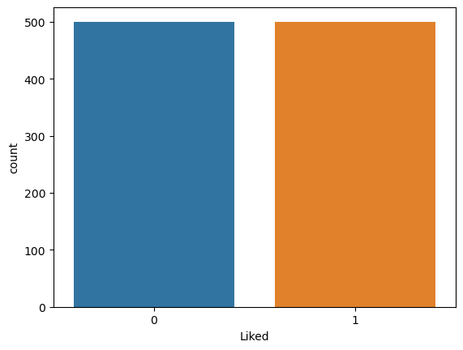

### Import Libraries
import pandas as pd # data provessing, CSV file I/O(e.g.pd.read_csv)
import numpy as np
## Visualization Libraries
import matplotlib.pyplot as plt # https://matplotlib.org/stable/gallery/index
import seaborn as sns # https://seaborn.pydata.org/
%matplotlib inline
#import warnings
#warnings.filterwarnings("ignore", category=FutureWarning)
#warnings.filterwarnings("ignore", category=DeprecationWarning)Machine Learning-based Data Analysis
Minseo Park
[Practice 2] : Supervised Learning
0. Problem Define
1. Library import
2. Data Collection
3. EDA(Exploratory Data Analysis)
4. Preprocessing
- 4.1 Stemmer
- 4.2 Bag of Words : 문장별 단어 벡터 만들기
- 4.3 Train : Test 로 나누기
5. Modeling[0]: Problem Define
레스토랑 리뷰 : 레스토랑 리뷰를 분석하여 Positive/Negative로 분류합니다. - Data: Kaggle (https://www.kaggle.com/akram24/restaurant-reviews)
[1] Libraries setteting : import libraries
[2]: Data Collection
[2.1]: 사용할 데이터 셋을 가져옵니다: Restaurant Review
dataset=pd.read_csv("./data/Restaurant_Reviews.tsv", delimiter='\t')
### TSV: 파일 형식 "탭으로 구분 된 값"을 의미하고,
### 이 탭으로 구분 된 값 파일이 많은 스프레드 시트 응용 프로그램에 의해 만들어지고 사용
### 1000개의 레스토랑 리뷰를 가져옵니다.#데이터셋을 불러와서 첫 세 줄을 출력하여 데이터의 구성을 한 번 살펴봅니다.
dataset.head()| Review | Liked | |
|---|---|---|
| 0 | Wow... Loved this place. | 1 |
| 1 | Crust is not good. | 0 |
| 2 | Not tasty and the texture was just nasty. | 0 |
| 3 | Stopped by during the late May bank holiday of... | 1 |
| 4 | The selection on the menu was great and so wer... | 1 |
[3]: EDA(Exploratory Data Analysis) : 데이터 탐색
- 통계량 확인하기 (Summary)
- pandas 로 불러온 데이터 살펴보기: head(), shape(), info(), describe(), value_counts(), unique() 등
- https://hogni.tistory.com/5
#데이터 셋 구조보기
dataset.shape(1000, 2)### 해석) 행이 1000개, 열이 2, 리뷰를 통해 분류하는데 사용한 변수가 2개dataset.describe()
#.describe() 함수는 데이터의 컬럼별 요약 통계량을 나타냅니다.
# mean(), max(), median()등 개별 함수를 사용하여 통계량을 계산할 수도 있습니다| Liked | |
|---|---|
| count | 1000.00000 |
| mean | 0.50000 |
| std | 0.50025 |
| min | 0.00000 |
| 25% | 0.00000 |
| 50% | 0.50000 |
| 75% | 1.00000 |
| max | 1.00000 |
### [data type]을 확인합니다.
dataset.info()<class 'pandas.core.frame.DataFrame'>
RangeIndex: 1000 entries, 0 to 999
Data columns (total 2 columns):
# Column Non-Null Count Dtype
--- ------ -------------- -----
0 Review 1000 non-null object
1 Liked 1000 non-null int64
dtypes: int64(1), object(1)
memory usage: 15.8+ KB### [결측치] : 비어있는 데이터를 찾습니다.
### 여기서는 어떤 컬럼(변수, 특성, x)에 결측치가 많은지 봅니다.
dataset.isnull().sum() # There has no null valuesReview 0
Liked 0
dtype: int64sns.countplot(x = dataset['Liked'], data = dataset)<Axes: xlabel='Liked', ylabel='count'>
해석) Liked & Disliked are 500.
dataset[dataset['Liked'] == 1]["Liked"].count()500dataset[dataset['Liked'] == 0]["Liked"].count()5000. Problem Define
1. Library import
2. Data Collection
3. EDA(Exploratory Data Analysis) : 데이터 탐색
4. Preprocessing
- 4.1 Stemmer
- 4.2 Bag of Words : 문장별 단어 벡터 만들기
- 4.3 Train : Test 로 나누기
5. Modeling[4]: Preprocessing
from nltk.corpus import stopwords
from nltk.stem.snowball import SnowballStemmer
import re # 정규화[nltk.corpus.stopword] - 자연어처리를 할때, 너무 빈번하게 나와서, 아무의미 없다고 판단되는 단어들을 보통 “stopword”라고 부릅니다. - 가령, ‘a’, ’the’와 같은 단어들은 모든 구문(phrase)들에 매우 많이 등장합니다. 따라서 아무 의미를 가지지 못합니다. - 사실 연구자 혹은 분석가가 자연어 처리중에 보면, “아 이 단어는 제외해야겠구나”라는 생각이 옵니다. - 앞에서 본 것처럼 너무 명확하고, 아무 의미가 없는 것이니까요. - Reference: https://frhyme.github.io/python-libs/nltk_stopwords/
[TF-IDF] - 다른 방법으로는 TF-IDF 값을 사용할 수도 있습니다. - TF-IDF는 “Term Frequency - Inverse Document Frequency”를 말하며, 키워드의 빈도(TF)가 클수록 크고, 등장한 문서의 비율(DF)가 클수록 작아집니다. - 즉, DF가 클수록 작아집니다. - 보통 stopword는 DF(Document Frequency)가 굉장히 큽니다. 대부분의 문서에서 등장합니다. - nltk.corpus.stopwords.words(‘english’)를 사용해서 보편적으로 사용되는 stopwords를 가져올 수 있습니다. - nltk.corpus.stopword 에는 다음 단어들이 포함되어 있죠. 보면 대략 합당하고 느껴집니다. - Reference: https://wikidocs.net/22530
[Stemming] - Stemming은 단어에서 접사(affix)를 제거하는 것을 의미합니다. - Stemming은 검색엔진에서 색인할 때 가장 많이 씁니다. - 모든 형태의 단어를 저장하는것 보다 Stemming한 단어를 저장하는 것이 색인 크기를 줄일 뿐만아니라 검색 정확성을 높일 수 있습니다. - 이런 알고리즘 stemmer/stemming algorithm 이라고 합니다. - Reference: https://excelsior-cjh.tistory.com/67
[4-1 Stemmer] SnowballStemmer Class
- steeming words를 지원하는 class가 여러개가 있습니다.
- 그 중 본 강의에서는 영어 외의 13개 국가의 언어에대한 Stemming을 지원하는 SnowballStemmer를 사용합니다.
stemmer = SnowballStemmer('english')stemmer<nltk.stem.snowball.SnowballStemmer at 0x256bcf230d0>corpus=[]##stemmer = SnowballStemmer('english')
import nltk
nltk.download('stopwords')
corpus = []
for i in range(0,1000):
review = re.sub('[^a-zA-Z]',' ',dataset['Review'][i])
## ^뒤의 문자열로 문자열이 시작됩니다.
## sub = substitution.
## 가정입니다.
## 알파벳을 제외한 문자들을 ' '로 대체합니다.
## 영어 문장에 각주 등과 같은 이유로 특수 문자가 섞여있습니다.
## 자연어 처리를 위해 특수 문자를 제거하고 싶다면 알파벳 외의 문자는 공백으로 처리하는 등의 사용 용도로 쓸 수 있습니다.
review = review.lower() ## 대문자를 소문자(lower)로 바꾸어 줍니다.
review = review.split()
review = [stemmer.stem(word) for word in review if word not in set(stopwords.words('english'))]
#stemmer 에 있는 모든 단어에서 접사를 빼고 review 에 넣어줍니다.
review = ' '.join(review)
corpus.append(review)
#append를 사용해서 계속 붙여 나갑니다.[nltk_data] Downloading package stopwords to
[nltk_data] C:\Users\User\AppData\Roaming\nltk_data...
[nltk_data] Package stopwords is already up-to-date![Regular Expression]
- split(): 함수는 입력된 정규 표현식을 기준으로 문자열들을 분리하여 리스트로 리턴합니다.
- 자연어 처리에 있어서 가장 많이 사용되는 정규 표현식 함수 중 하나인데, 토큰화에 유용하게 쓰일 수 있기 때문입니다.
- import re
- text="사과 딸기 수박 메론 바나나"
- re.split(" ",text)
- 결과
- ['사과', '딸기', '수박', '메론', '바나나']
- Reference : https://wikidocs.net/21703### import nltk
### nltk.download()
### 또다른 방법
### !pip install nltk (at jupyter)
### pip install nltk(at python console)dataset.head()
### dataset=pd.read_csv("./data/Restaurant_Reviews.tsv", delimiter='\t')| Review | Liked | |
|---|---|---|
| 0 | Wow... Loved this place. | 1 |
| 1 | Crust is not good. | 0 |
| 2 | Not tasty and the texture was just nasty. | 0 |
| 3 | Stopped by during the late May bank holiday of... | 1 |
| 4 | The selection on the menu was great and so wer... | 1 |
데이터 전처리가 잘 되어 있는지 확인해 보자!!
corpus[0]
### corpus는 전처리 후의 데이터 셋'wow love place'corpus[1]'crust good'해석)
- 모든 데이터의 전처리를 잘 마쳤는지, corpus의 길이를 확인합니다.
- corpus는 전처리된 리스트들이 들어 있는 테이블 입니다.
len(corpus)1000len(dataset) ## 기존 데이터셋과 같음을 확인하기 위해 점검1000dataset.tail()| Review | Liked | |
|---|---|---|
| 995 | I think food should have flavor and texture an... | 0 |
| 996 | Appetite instantly gone. | 0 |
| 997 | Overall I was not impressed and would not go b... | 0 |
| 998 | The whole experience was underwhelming, and I ... | 0 |
| 999 | Then, as if I hadn't wasted enough of my life ... | 0 |
corpus[999] ### 데이터 전처리 되 후의 데이터 확인'wast enough life pour salt wound draw time took bring check'dataset["Review"][999] ### 원본 데이터 확인"Then, as if I hadn't wasted enough of my life there, they poured salt in the wound by drawing out the time it took to bring the check."해석)
- raw data 와 preprocessed data 를 비교해 봅니다.
dataset.head()| Review | Liked | |
|---|---|---|
| 0 | Wow... Loved this place. | 1 |
| 1 | Crust is not good. | 0 |
| 2 | Not tasty and the texture was just nasty. | 0 |
| 3 | Stopped by during the late May bank holiday of... | 1 |
| 4 | The selection on the menu was great and so wer... | 1 |
dataset["Review"][0]'Wow... Loved this place.'corpus[0]'wow love place'0. Problem Define
1. Library import
2. Data Collection
3. EDA(Exploratory Data Analysis) : 데이터 탐색
4. Preprocessing
- 4.1 Stemmer
- 4.2 Bag of Words : 문장별 단어 벡터 만들기
- 4.3 Train : Test 로 나누기
5. Modeling[4-2 Bag of Words]
[참고 0] Sentimantal Analysis: 단어 벡터 및 단어 갯수
- https://smlee729.github.io/python/natural%20language%20processing/2015/04/06/1-sentimental-analysis-2.html
from sklearn.feature_extraction.text import CountVectorizer
### Convert a collection of text documents to a matrix of token counts
### sklearn>>feature_extraction>>text>>CountVectorizer#디폴트 값으로 CountVectorizer를 만들어줍니다.
cv = CountVectorizer(max_features=1500)[참고 1] max_features
- max_feature는 최대 feature 갯수를 설정해주는 파라미터입니다.
- 해당 파라미터를 이해하려면, feature의 개념에 대해 아셔야 합니다.
- 머신러닝에서 feature란, 테이블의 컬럼에 해당하는 개념입니다. 또한 행렬의 열에 해당하는 것이기도 합니다.
- 그럼 구체적인 예시를 코드로 한 번 살펴보겠습니다.
- 만약 한 문장에서 15 종류의 단어가 사용되었다면, feature 값은 15이다. max_features 값은 최대 단어의 종류(15)가 될 것 이다.
- 또 다른 의미로는 너무 많은 단어가 있을 경우, 가장 빈도수가 높은 단어 15개만 사용합니다.
[참고 2] CountVectorizer
- 단어들의 카운트(출현 빈도(frequency))로 여러 문서들을 벡터화
- 카운트 행렬, 단어 문서 행렬 (Term-Document Matrix, TDM))
- 모두 소문자로 변환시키기 때문에 me 와 Me 는 모두 같은 특성이 된다.
cv.fit(corpus)
### fit 함수를 통해서 각 리뷰들을 대입합니다. (단어 그대로 사용해서) 벡터로 만들어 줍니다.CountVectorizer(max_features=1500)In a Jupyter environment, please rerun this cell to show the HTML representation or trust the notebook.
On GitHub, the HTML representation is unable to render, please try loading this page with nbviewer.org.
CountVectorizer(max_features=1500)
print('Vocabulary: ')
print(cv.vocabulary_)
### cv에 있는 단어들과 들어있는 순서를 의미합니다.(다시 알파벳으로 ordering을 합니다.)Vocabulary:
{'wow': 1482, 'love': 762, 'place': 972, 'crust': 312, 'good': 581, 'tasti': 1299, 'textur': 1311, 'nasti': 845, 'stop': 1248, 'late': 740, 'may': 789, 'bank': 91, 'holiday': 652, 'rick': 1088, 'steve': 1241, 'recommend': 1055, 'select': 1143, 'menu': 798, 'great': 595, 'price': 1005, 'get': 565, 'angri': 33, 'want': 1433, 'damn': 321, 'pho': 960, 'honeslti': 655, 'tast': 1297, 'fresh': 540, 'potato': 997, 'like': 750, 'rubber': 1102, 'could': 285, 'tell': 1304, 'made': 771, 'ahead': 15, 'time': 1332, 'kept': 729, 'warmer': 1435, 'fri': 541, 'touch': 1350, 'servic': 1152, 'prompt': 1016, 'would': 1480, 'go': 575, 'back': 82, 'cashier': 201, 'care': 194, 'ever': 449, 'say': 1128, 'still': 1243, 'end': 433, 'wayyy': 1443, 'overpr': 912, 'tri': 1360, 'cape': 190, 'cod': 247, 'ravoli': 1045, 'chicken': 224, 'cranberri': 298, 'mmmm': 817, 'disgust': 372, 'pretti': 1004, 'sure': 1283, 'human': 671, 'hair': 615, 'shock': 1161, 'sign': 1172, 'indic': 693, 'cash': 199, 'high': 645, 'waitress': 1430, 'littl': 753, 'slow': 1184, 'worth': 1479, 'let': 747, 'alon': 23, 'vega': 1404, 'blah': 132, 'food': 526, 'amaz': 27, 'also': 24, 'cute': 319, 'interior': 707, 'beauti': 107, 'perform': 952, 'right': 1090, 'red': 1056, 'velvet': 1410, 'cake': 181, 'ohhh': 881, 'stuff': 1261, 'never': 854, 'brought': 163, 'salad': 1112, 'ask': 59, 'hole': 651, 'wall': 1432, 'mexican': 801, 'street': 1253, 'taco': 1289, 'friend': 543, 'staff': 1229, 'took': 1344, 'hour': 666, 'tabl': 1288, 'restaur': 1078, 'luke': 766, 'warm': 1434, 'sever': 1154, 'run': 1104, 'around': 55, 'total': 1349, 'overwhelm': 913, 'worst': 1478, 'salmon': 1113, 'sashimi': 1121, 'combo': 254, 'burger': 170, 'beer': 110, 'decent': 328, 'deal': 327, 'final': 502, 'blow': 141, 'found': 533, 'accid': 2, 'happier': 626, 'seem': 1141, 'quick': 1033, 'grab': 588, 'bite': 130, 'familiar': 479, 'pub': 1021, 'favor': 489, 'look': 759, 'elsewher': 429, 'overal': 909, 'lot': 761, 'redeem': 1057, 'qualiti': 1031, 'inexpens': 696, 'ampl': 31, 'portion': 993, 'poor': 990, 'waiter': 1429, 'feel': 492, 'stupid': 1262, 'everi': 450, 'came': 185, 'first': 509, 'visit': 1421, 'hiro': 649, 'delight': 343, 'suck': 1269, 'shrimp': 1169, 'tender': 1307, 'moist': 819, 'enough': 436, 'drag': 392, 'establish': 443, 'hard': 627, 'judg': 725, 'whether': 1456, 'side': 1171, 'gross': 605, 'melt': 797, 'styrofoam': 1264, 'eat': 412, 'fear': 491, 'sick': 1170, 'posit': 994, 'note': 868, 'server': 1151, 'attent': 66, 'provid': 1020, 'frozen': 545, 'puck': 1023, 'peopl': 949, 'behind': 112, 'regist': 1064, 'thing': 1318, 'prime': 1007, 'rib': 1084, 'dessert': 354, 'section': 1139, 'bad': 84, 'generic': 562, 'beef': 109, 'cook': 277, 'sandwich': 1119, 'firehous': 508, 'greek': 598, 'dress': 397, 'pita': 970, 'hummus': 673, 'refresh': 1061, 'order': 897, 'duck': 405, 'rare': 1039, 'pink': 968, 'insid': 701, 'nice': 857, 'char': 211, 'outsid': 905, 'us': 1395, 'realiz': 1049, 'husband': 677, 'left': 744, 'sunglass': 1280, 'chow': 232, 'horribl': 660, 'attitud': 67, 'toward': 1352, 'custom': 317, 'talk': 1293, 'one': 889, 'enjoy': 435, 'huge': 670, 'wonder': 1470, 'imagin': 684, 'heart': 635, 'attack': 65, 'grill': 601, 'downtown': 391, 'absolut': 0, 'flat': 513, 'excus': 459, 'much': 832, 'seafood': 1134, 'string': 1256, 'pasta': 935, 'bottom': 152, 'amount': 30, 'sauc': 1125, 'power': 1000, 'scallop': 1129, 'perfect': 951, 'rip': 1093, 'banana': 90, 'petrifi': 956, 'tasteless': 1298, 'least': 742, 'think': 1319, 'refil': 1059, 'water': 1440, 'struggl': 1259, 'wave': 1441, 'minut': 812, 'receiv': 1053, 'star': 1232, 'appet': 48, 'cocktail': 245, 'handmad': 622, 'delici': 341, 'definit': 337, 'glad': 570, 'give': 568, 'militari': 807, 'discount': 370, 'alway': 26, 'dos': 383, 'gringo': 602, 'updat': 1392, 'went': 1452, 'second': 1138, 'got': 585, 'appar': 46, 'heard': 634, 'salt': 1115, 'batter': 101, 'fish': 510, 'chewi': 223, 'way': 1442, 'finish': 506, 'includ': 689, 'drink': 400, 'jeff': 715, 'beyond': 119, 'expect': 461, 'realli': 1050, 'rice': 1086, 'meh': 796, 'min': 810, 'milkshak': 809, 'noth': 869, 'chocol': 229, 'milk': 808, 'guess': 610, 'known': 735, 'excalibur': 455, 'use': 1396, 'common': 257, 'sens': 1146, 'dish': 373, 'quit': 1034, 'appal': 45, 'valu': 1401, 'well': 1451, 'sweet': 1286, 'season': 1136, 'today': 1337, 'lunch': 768, 'buffet': 166, 'cheat': 216, 'wast': 1438, 'opportun': 894, 'compani': 258, 'come': 255, 'experienc': 464, 'underwhelm': 1379, 'relationship': 1067, 'parti': 931, 'wait': 1428, 'person': 955, 'break': 158, 'walk': 1431, 'smell': 1189, 'old': 884, 'greas': 593, 'trap': 1358, 'other': 899, 'turkey': 1370, 'roast': 1095, 'bland': 134, 'pan': 923, 'everyon': 451, 'rave': 1044, 'sugari': 1273, 'disast': 368, 'tailor': 1290, 'palat': 920, 'six': 1180, 'year': 1490, 'spring': 1227, 'roll': 1097, 'oh': 880, 'yummi': 1498, 'meat': 794, 'ratio': 1043, 'unsatisfi': 1388, 'omelet': 887, 'die': 357, 'everyth': 452, 'summari': 1276, 'larg': 738, 'disappoint': 366, 'dine': 360, 'experi': 463, 'sexi': 1156, 'mouth': 828, 'outrag': 903, 'flirt': 518, 'hottest': 665, 'rock': 1096, 'casino': 202, 'step': 1240, 'forward': 532, 'best': 117, 'breakfast': 159, 'bye': 176, 'tip': 1334, 'ladi': 737, 'arriv': 57, 'cafe': 180, 'serv': 1150, 'fantast': 483, 'wife': 1461, 'garlic': 557, 'bone': 147, 'marrow': 788, 'ad': 11, 'extra': 468, 'meal': 792, 'anoth': 35, 'help': 642, 'bloddi': 138, 'mari': 786, 'town': 1353, 'cannot': 188, 'beat': 105, 'mussel': 838, 'wine': 1463, 'reduct': 1058, 'better': 118, 'tigerlilli': 1331, 'afternoon': 13, 'bartend': 95, 'ambienc': 29, 'music': 837, 'play': 979, 'next': 856, 'trip': 1363, 'sooooo': 1206, 'real': 1048, 'sushi': 1285, 'lover': 763, 'honest': 656, 'yama': 1487, 'pass': 933, 'busi': 172, 'thai': 1312, 'spici': 1221, 'check': 217, 'atmospher': 62, 'kind': 733, 'steak': 1237, 'although': 25, 'sound': 1210, 'actual': 10, 'bit': 128, 'know': 734, 'manag': 781, 'blandest': 135, 'eaten': 413, 'prepar': 1002, 'indian': 692, 'cuisin': 315, 'boot': 149, 'worri': 1476, 'fine': 504, 'guy': 612, 'son': 1202, 'said': 1110, 'thought': 1324, 'ventur': 1412, 'away': 74, 'hit': 650, 'spot': 1225, 'night': 859, 'host': 662, 'lack': 736, 'word': 1472, 'bitch': 129, 'number': 871, 'reason': 1051, 'review': 1080, 'leav': 743, 'phenomen': 958, 'ambianc': 28, 'return': 1079, 'strip': 1257, 'pork': 992, 'belli': 115, 'mediocr': 795, 'penn': 948, 'vodka': 1422, 'excel': 457, 'crispi': 307, 'wrap': 1483, 'delish': 344, 'tuna': 1369, 'rude': 1103, 'nyc': 874, 'bagel': 85, 'cream': 302, 'chees': 219, 'caper': 191, 'even': 447, 'subway': 1267, 'fact': 473, 'serious': 1148, 'solid': 1195, 'bar': 92, 'extrem': 470, 'mani': 784, 'weekend': 1448, 'empti': 432, 'suggest': 1274, 'ate': 61, 'curri': 316, 'bamboo': 89, 'shoot': 1163, 'blanket': 136, 'moz': 830, 'top': 1345, 'done': 379, 'cover': 292, 'subpar': 1266, 'bathroom': 100, 'clean': 240, 'decor': 331, 'chang': 210, 'consid': 271, 'pace': 917, 'thumb': 1329, 'watch': 1439, 'pay': 941, 'ignor': 682, 'fianc': 497, 'middl': 804, 'day': 325, 'greet': 600, 'seat': 1137, 'mandalay': 782, 'bay': 102, 'forti': 531, 'five': 511, 'vain': 1399, 'crostini': 308, 'stale': 1230, 'highlight': 646, 'nigiri': 860, 'joint': 722, 'differ': 358, 'cut': 318, 'piec': 964, 'flavor': 514, 'voodoo': 1424, 'sinc': 1177, 'gluten': 574, 'free': 537, 'ago': 14, 'unfortun': 1381, 'must': 839, 'bakeri': 86, 'reloc': 1070, 'impress': 687, 'immedi': 685, 'divers': 376, 'avoid': 72, 'cost': 282, 'full': 550, 'hand': 620, 'phoenix': 961, 'metro': 800, 'area': 52, 'treat': 1359, 'bacon': 83, 'hella': 640, 'salti': 1116, 'spinach': 1223, 'avocado': 71, 'ingredi': 699, 'sad': 1107, 'liter': 752, 'zero': 1499, 'list': 751, 'khao': 731, 'soi': 1194, 'miss': 814, 'terrif': 1310, 'thrill': 1326, 'accommod': 3, 'vegetarian': 1407, 'daughter': 324, 'perhap': 953, 'caught': 204, 'inspir': 702, 'desir': 351, 'modern': 818, 'hip': 648, 'maintain': 777, 'cozi': 294, 'week': 1447, 'haunt': 630, 'sat': 1122, 'take': 1291, 'overcook': 910, 'charcoal': 212, 'decid': 329, 'send': 1145, 'verg': 1414, 'probabl': 1009, 'dirt': 363, 'someth': 1199, 'healthi': 633, 'quantiti': 1032, 'raspberri': 1040, 'ice': 680, 'incred': 691, 'interest': 706, 'crepe': 305, 'station': 1235, 'hot': 664, 'bread': 157, 'butter': 174, 'home': 653, 'chip': 226, 'origin': 898, 'egg': 423, 'gyro': 613, 'wing': 1464, 'satisfi': 1124, 'joey': 720, 'vote': 1425, 'dog': 377, 'valley': 1400, 'reader': 1047, 'magazin': 774, 'bowl': 153, 'live': 754, 'friday': 542, 'insult': 705, 'felt': 496, 'disrespect': 375, 'drive': 402, 'exceed': 456, 'hope': 659, 'dream': 395, 'serivc': 1149, 'brunch': 164, 'invit': 708, 'last': 739, 'foot': 527, 'mix': 816, 'mushroom': 836, 'yukon': 1496, 'gold': 578, 'pure': 1027, 'white': 1457, 'corn': 279, 'beateous': 106, 'bug': 167, 'show': 1167, 'given': 569, 'climb': 241, 'soon': 1204, 'tartar': 1296, 'though': 1323, 'soggi': 1193, 'jamaican': 713, 'mojito': 820, 'small': 1185, 'rich': 1087, 'accord': 5, 'shower': 1168, 'rins': 1092, 'unless': 1385, 'mind': 811, 'nude': 870, 'see': 1140, 'lobster': 755, 'bisqu': 127, 'bussel': 173, 'sprout': 1228, 'risotto': 1094, 'filet': 499, 'need': 849, 'pepper': 950, 'cours': 289, 'none': 865, 'bode': 145, 'someon': 1198, 'either': 425, 'cold': 249, 'date': 323, 'unbeliev': 1376, 'bargain': 94, 'folk': 524, 'otto': 901, 'make': 778, 'welcom': 1450, 'special': 1217, 'main': 776, 'uninspir': 1383, 'whenev': 1455, 'world': 1475, 'annoy': 34, 'drunk': 404, 'fun': 551, 'chef': 222, 'doubl': 384, 'cheeseburg': 220, 'singl': 1178, 'patti': 940, 'fall': 477, 'apart': 42, 'pictur': 963, 'upload': 1394, 'yeah': 1489, 'coupl': 287, 'sport': 1224, 'event': 448, 'tv': 1372, 'possibl': 995, 'descript': 349, 'yum': 1497, 'eel': 419, 'yet': 1494, 'mayo': 791, 'hardest': 628, 'decis': 330, 'suppos': 1282, 'eye': 471, 'stay': 1236, 'money': 822, 'flavour': 516, 'almost': 22, 'build': 168, 'freez': 538, 'close': 242, 'point': 986, 'ayc': 77, 'light': 749, 'dark': 322, 'set': 1153, 'mood': 825, 'base': 96, 'sub': 1265, 'par': 927, 'effort': 422, 'gratitud': 591, 'owner': 915, 'privileg': 1008, 'work': 1473, 'creami': 303, 'parent': 929, 'similar': 1174, 'complaint': 261, 'silent': 1173, 'pizza': 971, 'peanut': 945, 'fast': 486, 'godfath': 577, 'tough': 1351, 'short': 1165, 'stick': 1242, 'recal': 1052, 'charg': 213, 'tap': 1294, 'exquisit': 466, 'generous': 563, 'plus': 984, 'buck': 165, 'thus': 1330, 'far': 484, 'twice': 1373, 'self': 1144, 'proclaim': 1011, 'coffe': 248, 'wild': 1462, 'veggitarian': 1409, 'platter': 978, 'cant': 189, 'wrong': 1485, 'madison': 773, 'ironman': 709, 'job': 719, 'dedic': 332, 'boba': 144, 'tea': 1301, 'jenni': 716, 'patio': 938, 'outstand': 906, 'goat': 576, 'skimp': 1181, 'mac': 769, 'bachi': 81, 'stink': 1244, 'saganaki': 1109, 'hate': 629, 'disagre': 365, 'fellow': 495, 'yelper': 1493, 'later': 741, 'neighborhood': 852, 'conveni': 276, 'locat': 756, 'pull': 1024, 'soooo': 1205, 'gave': 559, 'rate': 1041, 'pleas': 980, 'third': 1320, 'write': 1484, 'stir': 1245, 'noodl': 866, 'count': 286, 'box': 154, 'bore': 150, 'greedi': 597, 'corpor': 280, 'dime': 359, 'atroci': 63, 'summer': 1277, 'charm': 214, 'outdoor': 902, 'toast': 1336, 'english': 434, 'muffin': 833, 'untoast': 1389, 'hous': 667, 'bus': 171, 'boy': 155, 'basic': 98, 'figur': 498, 'joke': 723, 'public': 1022, 'bbq': 103, 'fare': 485, 'two': 1374, 'happi': 625, 'downsid': 390, 'without': 1469, 'doubt': 385, 'except': 458, 'month': 824, 'favorit': 490, 'shawarrrrrrma': 1159, 'black': 131, 'pea': 943, 'unreal': 1387, 'vinaigrett': 1418, 'seen': 1142, 'especi': 442, 'mom': 821, 'pleasant': 981, 'honor': 657, 'hut': 678, 'coupon': 288, 'truli': 1366, 'dirti': 364, 'replenish': 1073, 'plain': 973, 'yucki': 1495, 'standard': 1231, 'omg': 888, 'delicioso': 342, 'authent': 69, 'spaghetti': 1216, 'whatsoev': 1453, 'veget': 1406, 'tucson': 1367, 'chipotl': 228, 'classi': 238, 'succul': 1268, 'basebal': 97, 'brick': 161, 'oven': 908, 'app': 44, 'multipl': 835, 'ten': 1306, 'terribl': 1309, 'equal': 441, 'pancak': 924, 'genuin': 564, 'enthusiast': 438, 'gordon': 584, 'ramsey': 1035, 'shall': 1157, 'sharpli': 1158, 'life': 748, 'door': 382, 'offer': 878, 'cool': 278, 'turn': 1371, 'els': 428, 'buy': 175, 'handl': 621, 'rowdi': 1101, 'find': 503, 'despic': 352, 'soup': 1212, 'lukewarm': 767, 'crave': 299, 'deserv': 350, 'stomach': 1246, 'ach': 7, 'rest': 1076, 'drop': 403, 'ball': 88, 'space': 1215, 'tini': 1333, 'eleg': 426, 'comfort': 256, 'usual': 1397, 'eggplant': 424, 'green': 599, 'bean': 104, 'outta': 907, 'part': 930, 'inconsider': 690, 'hi': 644, 'dinner': 361, 'outshin': 904, 'halibut': 617, 'told': 1339, 'happen': 624, 'car': 192, 'front': 544, 'starv': 1234, 'disgrac': 371, 'def': 335, 'ethic': 445, 'continu': 275, 'andddd': 32, 'anyon': 38, 'past': 934, 'stuf': 1260, 'crystal': 314, 'shop': 1164, 'mall': 779, 'aria': 54, 'summar': 1275, 'nay': 846, 'transcend': 1357, 'bring': 162, 'joy': 724, 'pneumat': 985, 'condiment': 268, 'dispens': 374, 'ian': 679, 'kid': 732, 'option': 896, 'famili': 478, 'impecc': 686, 'simpli': 1176, 'account': 6, 'screw': 1133, 'remind': 1072, 'pop': 991, 'san': 1118, 'francisco': 535, 'gourmet': 587, 'frustrat': 547, 'petti': 957, 'hungri': 675, 'assur': 60, 'teeth': 1303, 'sore': 1208, 'complet': 262, 'becom': 108, 'regular': 1065, 'profession': 1012, 'companion': 259, 'ground': 606, 'smear': 1188, 'track': 1354, 'everywher': 453, 'pile': 965, 'bird': 125, 'poop': 989, 'furthermor': 553, 'oper': 892, 'websit': 1445, 'mistak': 815, 'expert': 465, 'connisseur': 269, 'topic': 1346, 'jerk': 717, 'strike': 1255, 'rush': 1105, 'nicest': 858, 'across': 9, 'biscuit': 126, 'absolutley': 1, 'awkward': 76, 'cow': 293, 'ths': 1328, 'gristl': 603, 'fat': 487, 'steiner': 1239, 'dollar': 378, 'anyway': 41, 'fs': 548, 'combin': 253, 'pear': 946, 'almond': 21, 'big': 120, 'winner': 1465, 'spicier': 1222, 'prefer': 1001, 'ribey': 1085, 'mesquit': 799, 'anytim': 40, 'gooodd': 583, 'connoisseur': 270, 'certain': 207, 'contain': 274, 'driest': 399, 'relax': 1068, 'venu': 1413, 'group': 607, 'etc': 444, 'nargil': 844, 'tater': 1300, 'tot': 1348, 'southwest': 1214, 'paid': 919, 'vanilla': 1402, 'smooth': 1191, 'profiterol': 1013, 'choux': 231, 'pastri': 936, 'im': 683, 'az': 78, 'new': 855, 'due': 407, 'acknowledg': 8, 'forget': 529, 'margarita': 785, 'ventil': 1411, 'upgrad': 1393, 'rather': 1042, 'camelback': 186, 'flower': 520, 'cartel': 197, 'trim': 1362, 'claim': 236, 'bill': 123, 'jewel': 718, 'exact': 454, 'near': 847, 'boil': 146, 'crab': 296, 'leg': 745, 'toro': 1347, 'cavier': 206, 'extraordinari': 469, 'thin': 1317, 'slice': 1183, 'wagyu': 1427, 'truffl': 1365, 'dont': 380, 'long': 757, 'attach': 64, 'gas': 558, 'awesom': 75, 'wors': 1477, 'humili': 672, 'worker': 1474, 'bunch': 169, 'name': 842, 'call': 183, 'conclus': 267, 'fill': 500, 'daili': 320, 'tragedi': 1356, 'struck': 1258, 'crawfish': 300, 'monster': 823, 'funni': 552, 'multi': 834, 'grain': 589, 'pumpkin': 1025, 'pecan': 947, 'fluffi': 521, 'airlin': 16, 'noca': 863, 'thorough': 1322, 'homemad': 654, 'cheesecurd': 221, 'typic': 1375, 'glanc': 571, 'finger': 505, 'item': 711, 'gone': 580, 'greasi': 594, 'unhealthi': 1382, 'might': 805, 'deliveri': 346, 'man': 780, 'apolog': 43, 'expens': 462, 'pack': 918, 'tiramisu': 1335, 'cannoli': 187, 'sun': 1278, 'whole': 1458, 'choos': 230, 'frenchman': 539, 'opinion': 893, 'entre': 440, 'gc': 560, 'sampl': 1117, 'thirti': 1321, 'vacant': 1398, 'yellowtail': 1492, 'carpaccio': 195, 'stranger': 1251, 'hello': 641, 'strang': 1250, 'boyfriend': 156, 'recent': 1054, 'donut': 381, 'save': 1127, 'room': 1098, 'mayb': 790, 'howev': 668, 'particular': 932, 'suffer': 1271, 'tapa': 1295, 'vinegrett': 1419, 'babi': 80, 'palm': 922, 'believ': 113, 'hanker': 623, 'forth': 530, 'theft': 1315, 'eew': 420, 'overhaul': 911, 'wit': 1468, 'guest': 611, 'super': 1281, 'swung': 1287, 'deepli': 334, 'effici': 421, 'fan': 481, 'sucker': 1270, 'dri': 398, 'cheap': 215, 'oliv': 886, 'perpar': 954, 'present': 1003, 'giant': 566, 'dust': 409, 'powder': 999, 'sugar': 1272, 'fo': 522, 'accomod': 4, 'vegan': 1405, 'veggi': 1408, 'crumbi': 311, 'pale': 921, 'color': 252, 'instead': 704, 'crouton': 309, 'crema': 304, 'caf': 179, 'expand': 460, 'wish': 1467, 'philadelphia': 959, 'sit': 1179, 'fair': 475, 'crisp': 306, 'north': 867, 'scottsdal': 1131, 'soooooo': 1207, 'freak': 536, 'paper': 926, 'reheat': 1066, 'ok': 883, 'wedg': 1446, 'sorri': 1209, 'tongu': 1342, 'cheek': 218, 'bloodi': 139, 'despit': 353, 'yellow': 1491, 'saffron': 1108, 'thru': 1327, 'mean': 793, 'half': 616, 'somehow': 1197, 'luck': 765, 'non': 864, 'focus': 523, 'grandmoth': 590, 'hostess': 663, 'four': 534, 'blue': 143, 'shirt': 1160, 'vibe': 1417, 'drastic': 393, 'caesar': 178, 'madhous': 772, 'proven': 1019, 'dead': 326, 'greatest': 596, 'macaron': 770, 'insan': 700, 'inform': 698, 'somewhat': 1201, 'edibl': 416, 'promis': 1015, 'fail': 474, 'deliv': 345, 'averag': 70, 'plater': 977, 'togeth': 1338, 'construct': 273, 'italian': 710, 'scream': 1132, 'legit': 746, 'book': 148, 'somethat': 1200, 'duo': 408, 'violinist': 1420, 'song': 1203, 'request': 1074, 'baklava': 87, 'falafel': 476, 'baba': 79, 'ganoush': 555, 'mgm': 802, 'courteous': 291, 'eclect': 414, 'onion': 890, 'ring': 1091, 'nobu': 862, 'googl': 582, 'smashburg': 1187, 'gem': 561, 'plantain': 974, 'spend': 1219, 'panna': 925, 'cotta': 284, 'slaw': 1182, 'drench': 396, 'piano': 962, 'soundtrack': 1211, 'rge': 1082, 'fillet': 501, 'relleno': 1069, 'plate': 976, 'sergeant': 1147, 'auju': 68, 'hawaiian': 631, 'breez': 160, 'mango': 783, 'magic': 775, 'pineappl': 967, 'smoothi': 1192, 'mortifi': 826, 'needless': 850, 'drip': 401, 'most': 827, 'hospit': 661, 'industri': 695, 'paradis': 928, 'refrain': 1060, 'cibo': 234, 'longer': 758, 'famous': 480, 'read': 1046, 'pros': 1018, 'simpl': 1175, 'dough': 387, 'tonight': 1343, 'elk': 427, 'hook': 658, 'classic': 239, 'quaint': 1029, 'compliment': 263, 'thank': 1313, 'dylan': 410, 'tummi': 1368, 'gratuiti': 592, 'fli': 517, 'appl': 50, 'juic': 726, 'han': 619, 'nan': 843, 'bare': 93, 'ryan': 1106, 'edinburgh': 417, 'revisit': 1081, 'chines': 225, 'naan': 840, 'pine': 966, 'nut': 872, 'airport': 17, 'speedi': 1218, 'calligraphi': 184, 'anyth': 39, 'complain': 260, 'stood': 1247, 'begin': 111, 'open': 891, 'extens': 467, 'wide': 1459, 'array': 56, 'inflat': 697, 'smaller': 1186, 'grow': 608, 'rapid': 1038, 'fuzzi': 554, 'fabul': 472, 'wonton': 1471, 'thick': 1316, 'spice': 1220, 'whelm': 1454, 'crowd': 310, 'older': 885, 'mid': 803, 'arepa': 53, 'jalapeno': 712, 'that': 1314, 'shoe': 1162, 'defin': 336, 'block': 137, 'low': 764, 'key': 730, 'fanci': 482, 'afford': 12, 'sour': 1213, 'sunday': 1279, 'tradit': 1355, 'hunan': 674, 'style': 1263, 'bother': 151, 'flair': 512, 'nutshel': 873, 'restaraunt': 1077, 'sewer': 1155, 'girlfriend': 567, 'veal': 1403, 'satifi': 1123, 'join': 721, 'club': 243, 'via': 1416, 'email': 430, 'case': 198, 'colder': 250, 'flavorless': 515, 'describ': 348, 'tepid': 1308, 'chain': 209, 'easili': 411, 'nacho': 841, 'crazi': 301, 'juri': 727, 'court': 290, 'wienerschnitzel': 1460, 'idea': 681, 'herea': 643, 'tribut': 1361, 'held': 638, 'salsa': 1114, 'pissd': 969, 'surpris': 1284, 'golden': 579, 'fell': 493, 'devin': 356, 'employe': 431, 'mozzarella': 831, 'neglig': 851, 'unwelcom': 1390, 'consist': 272, 'fruit': 546, 'peach': 944, 'offici': 879, 'blown': 142, 'put': 1028, 'plastic': 975, 'oppos': 895, 'cram': 297, 'takeout': 1292, 'cr': 295, 'pe': 942, 'delic': 340, 'aw': 73, 'kabuki': 728, 'maria': 787, 'articl': 58, 'fuck': 549, 'caballero': 177, 'head': 632, 'oyster': 916, 'round': 1100, 'disbelief': 369, 'qualifi': 1030, 'version': 1415, 'toler': 1340, 'polit': 988, 'wash': 1437, 'otherwis': 900, 'heat': 636, 'coconut': 246, 'fella': 494, 'huevo': 669, 'ranchero': 1037, 'appeal': 47, 'pricey': 1006, 'temp': 1305, 'glove': 573, 'deep': 333, 'oil': 882, 'pleasur': 982, 'plethora': 983, 'seal': 1135, 'approv': 51, 'colleg': 251, 'class': 237, 'start': 1233, 'edit': 418, 'besid': 116, 'costco': 283, 'uniqu': 1384, 'weird': 1449, 'groceri': 604, 'store': 1249, 'japanes': 714, 'dude': 406, 'doughi': 388, 'inch': 688, 'wire': 1466, 'albondiga': 19, 'tomato': 1341, 'three': 1325, 'occas': 876, 'bloodiest': 140, 'refus': 1063, 'anymor': 37, 'chai': 208, 'allergi': 20, 'warn': 1436, 'clue': 244, 'rotat': 1099, 'concern': 266, 'strawberri': 1252, 'unprofession': 1386, 'patron': 939, 'occasion': 877, 'pat': 937, 'bellagio': 114, 'anticip': 36, 'weak': 1444, 'correct': 281, 'sal': 1111, 'fav': 488, 'unexperienc': 1380, 'steakhous': 1238, 'proper': 1017, 'understand': 1378, 'concept': 265, 'guacamol': 609, 'pur': 1026, 'ed': 415, 'postino': 996, 'poison': 987, 'batch': 99, 'yay': 1488, 'hilari': 647, 'christma': 233, 'eve': 446, 'rememb': 1071, 'biggest': 122, 'entir': 439, 'teamwork': 1302, 'degre': 338, 'ri': 1083, 'calamari': 182, 'fondu': 525, 'lost': 760, 'forev': 528, 'scene': 1130, 'denni': 347, 'downright': 389, 'waaaaaayyyyyyyyyi': 1426, 'sangria': 1120, 'glass': 572, 'ridicul': 1089, 'neat': 848, 'trippi': 1364, 'hurri': 676, 'reserv': 1075, 'stretch': 1254, 'cashew': 200, 'undercook': 1377, 'chipolt': 227, 'ranch': 1036, 'dip': 362, 'saus': 1126, 'douchey': 386, 'indoor': 694, 'garden': 556, 'con': 264, 'spotti': 1226, 'neither': 853, 'ensu': 437, 'bing': 124, 'carb': 193, 'profound': 1014, 'deuchebaggeri': 355, 'smoke': 1190, 'solidifi': 1196, 'ala': 18, 'cart': 196, 'blame': 133, 'del': 339, 'hamburg': 618, 'hell': 639, 'gotten': 586, 'ya': 1486, 'shot': 1166, 'firebal': 507, 'disapppoint': 367, 'heimer': 637, 'caus': 205, 'own': 914, 'vomit': 1423, 'circumst': 235, 'obvious': 875, 'movi': 829, 'ha': 614, 'flop': 519, 'problem': 1010, 'bigger': 121, 'unwrap': 1391, 'mile': 806, 'mirag': 813, 'refri': 1062, 'crusti': 313, 'caterpillar': 203, 'appetit': 49, 'instant': 703, 'ninja': 861, 'pour': 998, 'wound': 1481, 'draw': 394}[참고 3] 두개의 새로운 문장을 리뷰들로 fit했던 단어들을 vectorizer로 변형시킵니다.
>>> X = cv.transform([‘A whole new text zzzzzzzzz’, ‘Something very new new new phrase uh ?’])
>>> print X
(0, 855) 1
(0, 13428) 1
(0, 14844) 1
(0, 15164) 1
(1, 855) 3
(1, 9807) 1
(1, 12374) 1
(1, 13980) 1
(1, 14482) 1
해석)
- 입력됐던 문장들이 sparse matrix형태로 변형됩니다.
- 앞의 tuple은 (i번째 document, j번째 단어(cv.vocabury에서 확인)를 의미하고, 더 쉽게 설명하면, i번째 문서에서, 전체의 단어빈도수 기준으로 j번째 단어를 의미합니다.
- int값은 등장 횟수를 의미합니다.
- matrix이다보니 숫자로만 index가 되어 무엇을 의미하는지는 헷갈리실 수 있습니다.
[참고 4] fit 과 transform을 한 코드로 만들 수 있습니다.
fit함수를 통해서 각 리뷰들을 대입합니다.
두개의 새로운 문장을 –> fit(단어그대로) –> transform (vectorizer)로 변형시킵니다.
먼저 fit 명령어를 통해서 text 변수
- (위의 설명에서….### fit 함수를 통해서 각 리뷰들을 대입합니다. (단어 그대로 사용해서) 벡터로 만들어 줍니다.)
transform 명령어를 통해서 vectorizer로
따로 따로
- cv.fit(corpus)
- cv.transform(corpus)
한번에
- x_1 =cv.fit_transform(corpus)
x_1 =cv.fit_transform(corpus)### Our final vector:
print('Full vector: ')
print(x_1.toarray())
### 한 행은 한 문서입니다. 여기서 한 문장, 한 row입니다.
### 각 열(featrues, column)은 단어를 의미합니다.
### 여기서는 빈도수가 높은 1500개의 단어를 기준으로 값을 표현한 것입니다.
### 그것을 다시 알파벳으로 ordering 합니다.
### 값이 0 해당 문장에 단어가 없다는 의미입니다. Full vector:
[[0 0 0 ... 0 0 0]
[0 0 0 ... 0 0 0]
[0 0 0 ... 0 0 0]
...
[0 0 0 ... 0 0 0]
[0 0 0 ... 0 0 0]
[0 0 0 ... 0 0 0]]x_1.shape
### 1000 개의 reviews를 1500개의 단어로 표현합니다.(1000, 1500)### Or if we wanted to get the vector for one word:
print('absolut vector: ')
print(cv.transform(['absolut']).toarray())
print('wow vector: ')
print(cv.transform(['wow']).toarray())
### max_features=1500 개 이므로, wow는 그 중 wow가 해당하는 곳에 1로 변형될 것입니다.
### one-hot encoding 개념입니다.absolut vector:
[[1 0 0 ... 0 0 0]]
wow vector:
[[0 0 0 ... 0 0 0]]### Or if we wanted to get multiple vectors at once to build matrices
print('absolut and wow and love: ')
print(cv.transform(['absolut','wow', 'love']).toarray())absolut and wow and love:
[[1 0 0 ... 0 0 0]
[0 0 0 ... 0 0 0]
[0 0 0 ... 0 0 0]][참고 5] + toarray() 까지 한번에!!
- We could also do the whole thing at once with the fit_transform method:
- print(‘One swoop:’)
- new_text = [‘Today is the day that I do the thing today, today’]
- new_vectorizer = CountVectorizer()
- print(new_vectorizer.fit_transform(new_text).toarray())
- 해석)
- fit함수를 통해서 각 리뷰(텍스트 기반 텍스트: 빈도수)들을 대입합니다.
- 두개의 새로운 문장을 리뷰들로 fit했던 것을 transform 를 통해 vectorizer로 변형시킵니다.
- 먼저 fit 명령어를 통해서 text 변수에 저장된 데이터를 학습시켜줘야 합니다.
x = cv.fit_transform(corpus)x
### 1000 개의 review에 대해서 one-hot encoding 적용해서 vector화 합니다.<1000x1500 sparse matrix of type '<class 'numpy.int64'>'
with 5324 stored elements in Compressed Sparse Row format>x = cv.fit_transform(corpus).toarray()
### corpus에 들어있는 문장. 즉, 전처리 후에 들어 있는 문장을 의미합니다.print(x)[[0 0 0 ... 0 0 0]
[0 0 0 ... 0 0 0]
[0 0 0 ... 0 0 0]
...
[0 0 0 ... 0 0 0]
[0 0 0 ... 0 0 0]
[0 0 0 ... 0 0 0]]x.shape
### (row, column): 데이터 확인
### 벡터의 모양
### 1000개의 문장, 1500개 단어로 구성(1000, 1500)y = dataset['Liked'].valuesprint(y)
### 1000개의 값(value)가 저장되어 있습니다.[1 0 0 1 1 0 0 0 1 1 1 0 0 1 0 0 1 0 0 0 0 1 1 1 1 1 0 1 0 0 1 0 1 0 1 1 1
0 1 0 1 0 0 1 0 1 0 1 1 1 1 1 1 0 1 1 0 0 1 0 0 1 1 1 1 1 1 1 0 1 1 1 0 0
0 0 0 1 1 0 0 0 0 1 0 1 0 1 1 1 0 1 0 1 0 0 1 1 0 1 1 1 1 1 1 1 1 1 1 1 0
0 1 1 1 1 0 0 0 0 0 0 1 1 1 0 0 1 0 1 0 1 1 0 1 1 1 1 0 1 0 0 0 0 1 1 0 0
0 0 1 1 0 0 1 1 1 1 1 0 0 1 1 0 1 1 1 0 0 1 0 1 1 1 1 0 0 1 1 0 0 0 0 0 1
1 0 1 1 1 1 1 0 1 0 1 0 0 1 1 1 1 0 1 1 1 0 0 0 1 0 0 1 0 1 1 0 1 0 1 0 0
0 0 0 1 1 1 0 1 1 0 1 0 1 0 0 1 0 1 0 1 0 0 0 0 1 1 1 0 1 0 1 0 1 1 1 0 1
0 1 0 1 1 1 1 0 1 1 0 1 1 1 1 1 0 1 1 0 0 1 0 0 0 1 1 0 0 1 0 0 0 1 0 1 1
0 1 0 1 1 0 0 0 1 0 0 0 1 1 1 0 1 0 1 0 0 1 1 1 0 0 1 1 1 1 1 1 0 0 0 1 1
0 1 1 0 0 1 0 0 1 1 1 0 1 1 1 1 1 0 0 1 0 1 1 0 1 1 1 0 1 1 0 1 0 0 1 1 1
0 0 1 1 0 1 0 1 0 0 0 1 1 0 0 0 1 0 0 1 1 1 1 1 1 1 0 1 1 1 0 0 0 1 1 0 1
1 1 0 1 1 0 1 0 0 0 1 1 1 1 0 0 0 0 1 1 0 0 1 0 1 1 0 1 0 1 1 1 1 0 1 1 0
1 1 0 0 1 1 0 1 0 0 0 0 1 1 1 1 0 1 1 0 1 1 0 0 1 1 1 0 1 0 0 0 1 1 1 1 0
1 0 0 1 1 1 0 0 1 1 1 0 1 1 0 1 1 1 1 1 0 1 1 1 0 0 0 0 0 1 1 1 1 1 1 0 1
0 1 1 1 0 0 1 0 0 1 1 1 1 1 1 1 0 1 0 1 0 1 1 0 1 0 0 1 1 0 0 1 1 1 1 0 0
0 0 0 1 1 0 0 1 1 1 0 0 1 0 0 0 0 0 1 1 0 0 1 1 1 0 0 0 1 0 1 1 0 1 0 1 1
1 0 0 1 0 1 1 0 1 0 1 1 1 1 1 0 1 0 0 0 0 0 1 1 0 0 1 0 0 0 1 0 1 1 0 0 0
1 1 1 0 1 0 1 0 1 0 1 1 0 1 0 0 0 0 0 1 0 0 1 1 0 1 0 1 1 1 1 1 1 1 1 1 1
1 1 1 0 0 1 0 1 1 1 1 0 1 0 1 0 1 1 1 0 1 1 1 1 1 0 1 1 1 0 0 0 0 0 0 0 1
1 1 0 1 0 1 0 1 0 1 0 1 1 1 0 1 0 1 1 1 1 1 1 1 0 1 1 0 0 1 1 1 0 0 1 1 1
1 0 0 0 0 1 1 1 0 1 1 1 1 1 0 1 0 1 1 0 1 0 0 0 1 0 1 1 1 1 0 1 0 0 1 0 1
0 0 0 1 1 1 0 0 1 0 1 1 1 1 0 0 1 0 1 1 1 0 1 0 1 0 1 1 0 1 0 1 1 0 0 0 0
1 1 0 1 0 0 0 0 1 1 0 0 0 0 0 0 0 0 0 1 1 0 1 0 0 1 0 1 1 0 0 0 0 1 0 0 1
0 1 1 0 0 1 1 0 0 1 1 0 1 1 1 1 1 1 0 0 0 1 1 0 0 0 1 1 0 0 0 1 0 0 0 0 0
1 0 1 1 0 0 1 1 1 1 0 1 0 1 0 0 0 0 0 1 0 1 0 0 0 0 0 0 0 0 0 0 0 0 1 0 0
0 0 0 0 0 0 0 0 0 0 0 0 0 0 0 0 0 0 0 0 0 0 0 0 0 0 0 0 0 0 0 0 0 0 0 0 0
0 0 0 0 0 0 0 0 0 0 0 0 0 0 0 0 0 0 0 0 0 0 0 0 0 0 0 0 0 0 0 0 0 0 0 0 0
0]y.shape(1000,)0. Problem Define
1. Library import
2. Data Collection
3. EDA(Exploratory Data Analysis) : 데이터 탐색
4. Preprocessing
- 4.1 Stemmer
- 4.2 Bag of Words : 문장별 단어 벡터 만들기
- 4.3 Train : Test 로 나누기
5. Modeling[4-3 데이터 셋 나누기] Train vs. Test
from sklearn.model_selection import train_test_splitx_train,x_test,y_train,y_test = train_test_split(x,y,test_size = 0.2,random_state = 17)
#train : test = 8:2
#같은 랜덤 초기값 사용 같은 랜덤 데이터 추출 옵션 [5 Modeling]
from sklearn.ensemble import RandomForestClassifierrf = RandomForestClassifier(n_estimators=800)
### 트리 800개로 구성된 랜덤 포레스트를 만든다.
### 즉, 숲을 만들 때 나무의 개수를 의미한다.
### random forest 는 수많은 작은 decision tree가 모여서 생성된다. Training the classifier
rf.fit(x_train,y_train)RandomForestClassifier(n_estimators=800)In a Jupyter environment, please rerun this cell to show the HTML representation or trust the notebook.
On GitHub, the HTML representation is unable to render, please try loading this page with nbviewer.org.
RandomForestClassifier(n_estimators=800)
Making Predictions
y_train_pred = rf.predict(x_train)y_pred = rf.predict(x_test)Evaluating Predictions
from sklearn.metrics import classification_report,confusion_matrix,accuracy_score
#confusion matrixconfusion_matrix(y_test,y_pred)
# + -
# +
# -
#? confusion_matrixarray([[72, 23],
[35, 70]], dtype=int64)print(classification_report(y_test,y_pred)) precision recall f1-score support
0 0.67 0.76 0.71 95
1 0.75 0.67 0.71 105
accuracy 0.71 200
macro avg 0.71 0.71 0.71 200
weighted avg 0.71 0.71 0.71 200
print('Traning Accuracy --->',accuracy_score(y_train,y_train_pred))
print('Testing Accuracy --->',accuracy_score(y_test,y_pred))Traning Accuracy ---> 0.99875
Testing Accuracy ---> 0.71